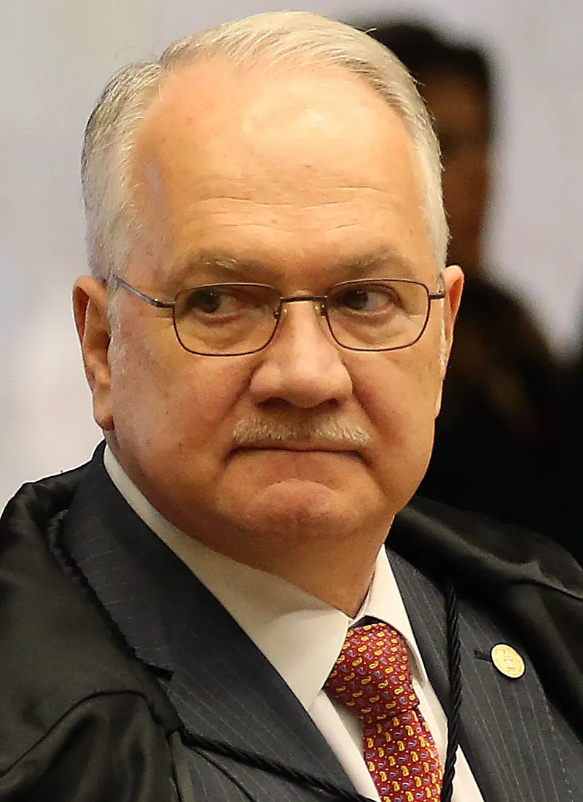

Fachin archiva en Brasil la investigación sobre las 'fake news' tras más de siete años
El presidente del STF aceptó la solicitud de la Fiscalía y cerró la investigación 4.781, sin anular decisiones anteriores ni causas independientes.

Qué pasó
El 9 de noviembre de 2026, Edson Fachin, presidente del Supremo Tribunal Federal (STF, Tribunal Supremo Federal de Brasil), ordenó archivar la investigación 4.781, conocida como el caso de las 'fake news'. La decisión atendió una solicitud de la Procuradoria-Geral da República (PGR, Fiscalía General de Brasil), que consideró cumplida la finalidad de las diligencias. El procedimiento se abrió en marzo de 2019 durante la presidencia de Dias Toffoli y estuvo a cargo de Alexandre de Moraes durante más de siete años. Fachin asumió su conducción en septiembre de 2026. El magistrado consideró que la investigación original no podía mantenerse indefinidamente para incorporar nuevos hechos sin una revisión concreta de su necesidad. Según Agência Brasil, el archivo no invalida actuaciones de investigación anteriores, no anula procesos penales iniciados ni termina pesquisas autónomas todavía en curso. Reuters confirmó la decisión en una cobertura independiente.
Análisis del Cuervo
El cierre pone fin a la investigación original que estuvo en el centro de un prolongado debate institucional. Sus críticos cuestionaron la duración, el secreto y la concentración de funciones en el tribunal; sus defensores alegaron que era necesaria ante las amenazas contra magistrados e instituciones democráticas. La resolución de Fachin fija un límite a este expediente y distingue su cierre de otros procedimientos. Sus consecuencias jurídicas deben examinarse caso por caso, sin presentarlo como una absolución o anulación general.
Contrapunto
El STF declaró constitucional la apertura de la investigación en 2020. Fachin reconoció su relevancia institucional, pero sostuvo que no justificaba mantenerla abierta indefinidamente. El archivo tampoco significa que todas las decisiones anteriores de Alexandre de Moraes hayan sido consideradas ilegales. La fotografía es de 2018 y no muestra la decisión del 9 de noviembre de 2026.